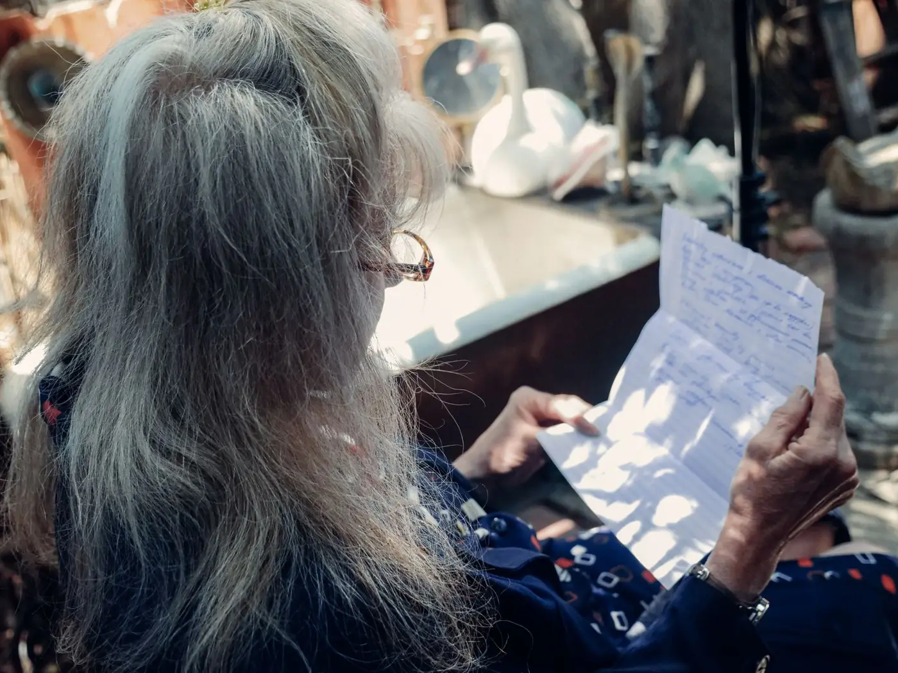

Documentos
Quais documentos devo levar?
Escolha o assunto e marque o que você já tem em casa. A lista fica guardada neste aparelho, e você pode imprimir ou mandar pelo WhatsApp.
Não precisa ter tudo para a primeira conversa. O que faltar, a gente explica como conseguir.

1. Escolha o assunto
Primeira conversa
Como tirar o extrato do CNIS
O CNIS mostra os empregos e as contribuições que o INSS tem registrados. É um dos documentos mais importantes.
- Abra o Meu INSSNo celular (aplicativo) ou no computador, e entre com a sua conta gov.br.
- Procure o extratoToque em "Extrato de contribuição (CNIS)".
- Baixe o PDFSalve no celular ou peça para alguém imprimir.
- Não conseguiu?Tudo bem. Pode pedir numa agência do INSS, ou a gente ajuda na conversa.
Se faltar algum documento
- Carteira de trabalho perdida: há outros jeitos de provar um emprego, como holerites, termo de rescisão e registros da empresa.
- Laudo antigo: o médico que acompanha você pode fazer um relatório atualizado.
- Documentos da roça: certidões de casamento e de nascimento dos filhos com a profissão de lavrador já ajudam.
Perguntas frequentes
O que é o extrato do CNIS e como consigo?
É o extrato com todos os empregos e contribuições que o INSS tem registrados. Você tira pelo aplicativo Meu INSS, em "Extrato de contribuição (CNIS)". Se não conseguir, ajudamos na conversa.
Perdi minha carteira de trabalho antiga. E agora?
Tudo bem. Existem outros caminhos para provar um emprego, como registros da empresa, termo de rescisão, holerites ou o próprio CNIS. Conte para nós o que você tem.
Recebi uma carta do INSS e não entendi. O que faço?
Guarde a carta e traga para a conversa, ou mande uma foto pelo WhatsApp. Muitas cartas têm prazos, por isso é bom não deixar para depois.
Cada caso depende de análise
As informações desta página são gerais e servem para você entender o assunto. Se você tem ou não direito, e qual o melhor caminho, só dá para saber depois de olhar os seus documentos. O escritório não promete resultado nem prazo.
Separou o que tinha?
Mande uma mensagem e marque a conversa. Pode trazer a pasta do jeito que estiver.